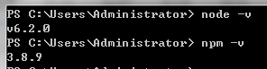
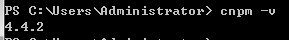
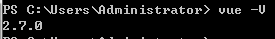
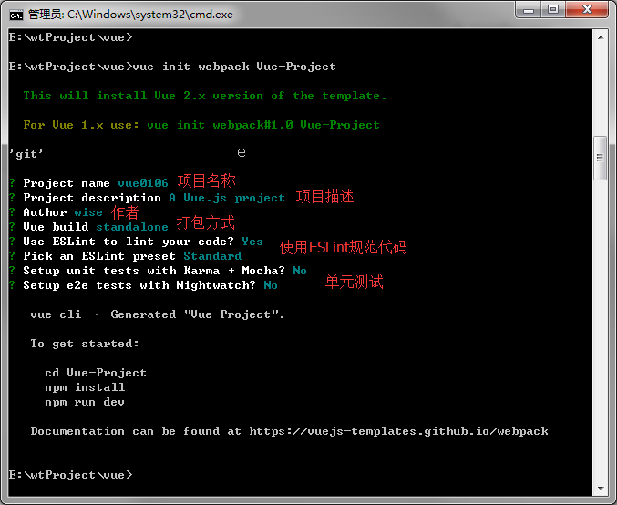
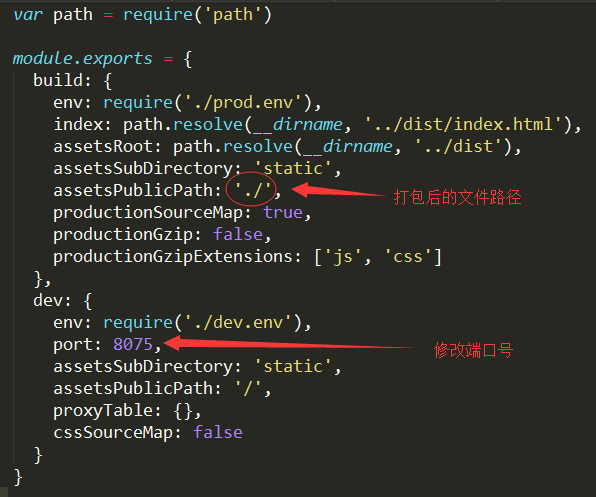

一、 安装 node.js
安装完成后，可以命令行工具中输入 node -v 和
npm -v，如果能显示出版本号，就说明安装成功。

二、安装 vue-cli
安装好了 node，我们可以直接全局安装 vue-cli：
npm install -g vue-
cli
但是这种安装方式比较慢，推荐使用国内镜像来安装，所以我们先设置 cnpm：
如果安装失败，可以使用 npm cache clean
清理缓存，然后再重新安装。后面的安装过程中，如有安装失败的情况，也需要先清理缓存
同样可以使用 cnpm -v
查看是否安装成功

然后使用 cnpm 安装 vue-cli 和 webpack
cnpm install -g vue-
cli
最新的 vue 项目模板中，都带有 webpack 插件，所以这里可以不安装 webpack
安装完成后，可以使用 vue -V
（注意 V 大写）查看是否安装成功。

如果提示“无法识别 'vue' ” ，有可能是 npm 版本过低，可以使用 npm install -g npm 来更新版本
三、生成项目
首先需要在命令行中进入到项目目录，然后输入：
vue init webpack Vue-Project
Vue-Project 是自定义的项目名称，命令执行之后，会在当前目录生成一个以该名称命名的项目文件夹

配置完成后，可以看到目录下多出了一个项目文件夹，里面就是 vue-cli 创建的一个基于 webpack 的 vue.js 项目
然后进入项目目录（cd Vue-Project），使用 cnpm 安装依赖
cnpm install
然后启动项目
npm run dev
如果浏览器打开之后，没有加载出页面，有可能是本地的 8080 端口被占用，需要修改一下配置文件 config>index.js

建议将端口号改为不常用的端口。另外我还将 build 的路径前缀修改为 ' ./ '（原本为 ' / '），是因为打包之后，外部引入 js 和 css 文件时，如果路径以 ' / ' 开头，在本地是无法找到对应文件的（服务器上没问题）。所以如果需要在本地打开打包后的文件，就得修改文件路径。
四、打包上线
自己的项目文件都需要放到 src 文件夹下
项目开发完成之后，可以输入 npm run build 来进行打包工作
npm run build
打包完成后，会生成 dist 文件夹，如果已经修改了文件路径，可以直接打开本地文件查看
项目上线时，只需要将 dist 文件夹放到服务器就行了。